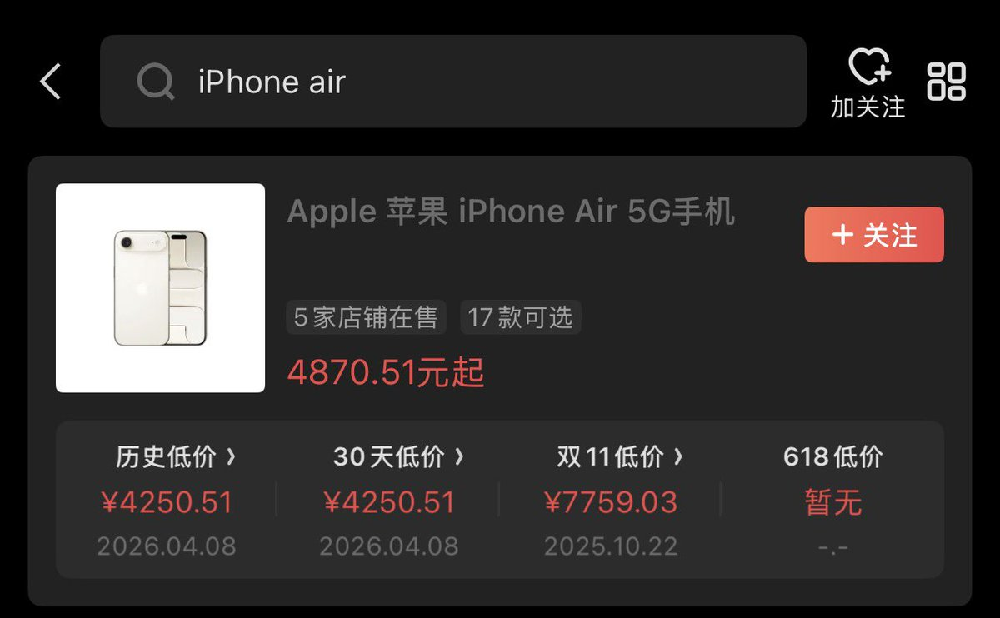
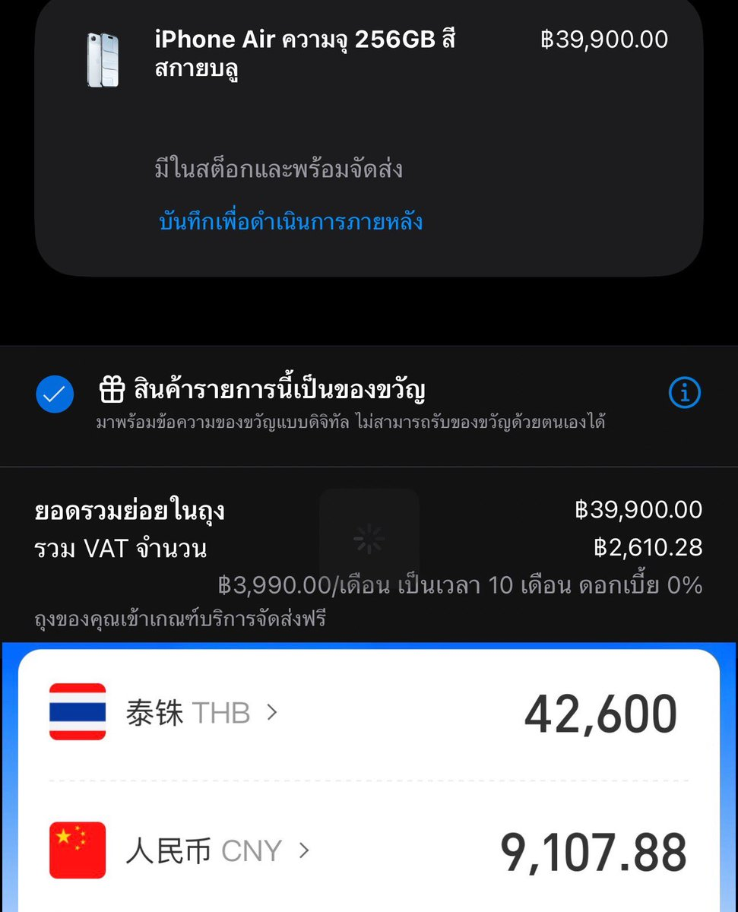

泰国应该是可以退税，不过Air国行除了26.0是无上限esim profile外，现在大部分出厂都是26.1有2卡上限
换句话说，你双卡eSIM（国内）写完了，去国外用当地的卡eSIM扫二维码前需要删掉任一国内卡，等回国的时候删掉这张境外当地卡，再去营业厅办理补卡业务
如果是17e那种单实体卡+eSIM玩法就很多，比如我放一张eSTK作为实体卡，国内双卡做eSIM，由eSTK来实现多eSIM Profile功能就很好
既然不改iPhone成大修机，又可以享受国内eSIM和境外eSIM共存，唯一不足的地方就是没法享受原生eSIM管理的体验，这是苹果没开放卡槽访问权限导致的
至于说体验上来看，eSIM这个东西只能等未来开放再考虑国行，就单纯地理围栏就很烦恼了
换句话说，你双卡eSIM（国内）写完了，去国外用当地的卡eSIM扫二维码前需要删掉任一国内卡，等回国的时候删掉这张境外当地卡，再去营业厅办理补卡业务
如果是17e那种单实体卡+eSIM玩法就很多，比如我放一张eSTK作为实体卡，国内双卡做eSIM，由eSTK来实现多eSIM Profile功能就很好
既然不改iPhone成大修机，又可以享受国内eSIM和境外eSIM共存，唯一不足的地方就是没法享受原生eSIM管理的体验，这是苹果没开放卡槽访问权限导致的
至于说体验上来看，eSIM这个东西只能等未来开放再考虑国行，就单纯地理围栏就很烦恼了

